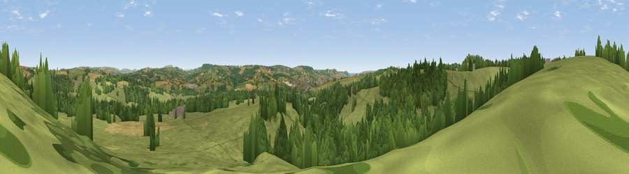

Viewpoint near Chardstock
#22476 in England · top 51% of its area beats it · near ChardstockWhere it is
The exact computed spot (ST 30025 02825). Click the marker for map links.
The view, rendered

A 360° render of this exact spot computed from the terrain model, tree cover and land cover — summer colours, afternoon light, calibrated against photographs of famous viewpoints. Real trees, hedges and buildings will differ in detail.
The panorama
Grey silhouette: terrain skyline in each direction (720 bearings, Earth curvature and refraction included). Dashed green: skyline with trees (+15 m) and buildings (+8 m) as obstacles. Blue strip: how far the ground is visible on each bearing.
Where the view opens
Wedge length = distance to the farthest visible ground on that bearing (vegetation-aware). Rings at 10, 25 and 50 km.
What fills the view
67% grassland · 27% woodland · 5% cropland · 1% built-up
Angular shares of the visible panorama (visual magnitude), not map area. Landscape diversity 0.36 (0–1 Shannon).
Key numbers
More beautiful places nearby
The staircase of upgrades: each row has a higher view potential than everything closer. Driving times are estimates from straight-line distance, calibrated against real road routing — check an actual route before setting out.
| Place | Direction | Drive | Score |
|---|---|---|---|
| Viewpoint near Tytherleigh | NE · 2 km | ~6 min | 54.3 |
| Viewpoint near Membury | NW · 3 km | ~8 min | 65.0 |
| Lambert's Castle Hill | ESE · 8 km | ~16 min | 78.7 |
| Viewpoint near Lyme Regis | SSE · 11 km | ~20 min | 81.3 |
| Viewpoint near Burstock | E · 11 km | ~22 min | 81.8 |
| Viewpoint near Axmouth | S · 13 km | ~24 min | 82.4 |
| Lewesdon Hill | E · 14 km | ~25 min | 83.3 |
| Golden Cap | SE · 15 km | ~27 min | 88.7 |
50.82072, -2.99475 · source: screening · position refined by local search. Computed location — check access rights before visiting.